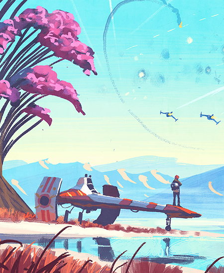
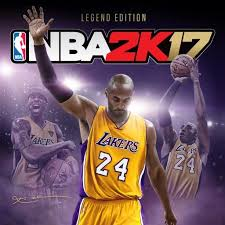

No Man's Sky
Inspirado en la ciencia ficción clásica y su sobrecogedor sentido de aventura e imaginación, Hello Games presenta un juego de escala y ambición sin precedentes. En No Man’s Sky explorarás un universo infinito para descubrir planetas y formas de vida nunca antes vistos.

Hay un misterio en el centro de la galaxia, un pulso irresistible que te lleva a un viaje épico para descubrir la verdadera naturaleza del cosmos. Tu viaje estará cargado de peligro y encontrarás criaturas hostiles y piratas feroces. Para sobrevivir, necesitarás prepararte y actualizar tu nave, tu traje y tus armas.
NBA 2K17
Tras el lanzamiento récord de NBA 2K16, la franquicia de NBA 2K sigue presumiendo de su hito al crear el videojuego de deportes más auténtico con NBA 2K17. Esta 'franquicia a la que todos los videojuegos de deportes deberían aspirar a ser' (GamesRadar) llevará a NBA 2K17 a alcanzar nuevas alturas y a difuminar los límites entre el videojuego y la realidad.
